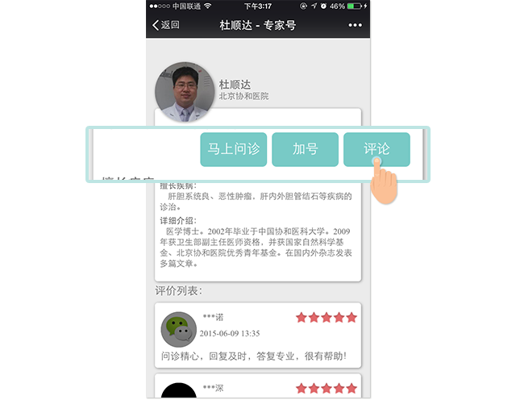

返回刚才页面，然后点击屏幕左下角按钮，出现对话框，再将您的病例、检查资料，以及要问的问题在对话框中发送。
特别提示：提供详细准确的检查资料是专家进行“精问诊”的前提,这也是“专家号”有别于其他一些医疗服务平台的特点,只有在准确资料的基础上,专家才能做出准确的判断，这也是对大家的健康负责！
专家收到资料后，会及时答复您的问题。
第三步:等待问诊结果
1.专家在收到材料后，会在第一时间回复，如果在手术台或会议中，一般会在12小时内回复。
2.如有问题，可以在48小时之内继续提问，超过48小时，系统会自动结束问诊。
第四步:对专家进行评价
问诊结束后，请您返回专家介绍页面，点击“详情”。然后点击“评论”，对专家的问诊过程进行评价。
评价内容，对其他用户有参考价值，希望大家认真客观评价。
第五步:推荐专家号
返回专家号主页面，点击更多服务>推荐专家号将专家号推荐到朋友圈，让更多人受益！